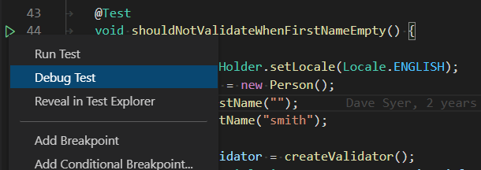
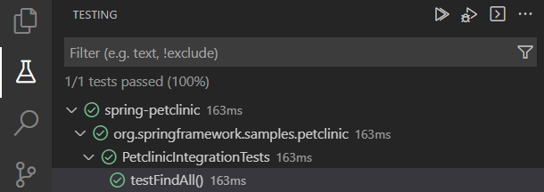
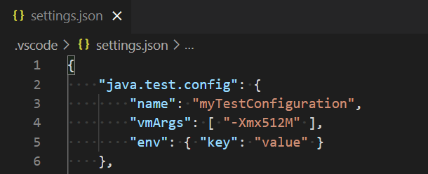
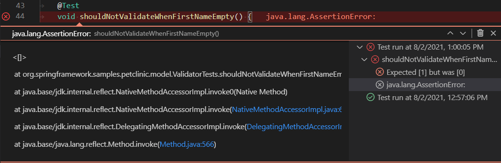
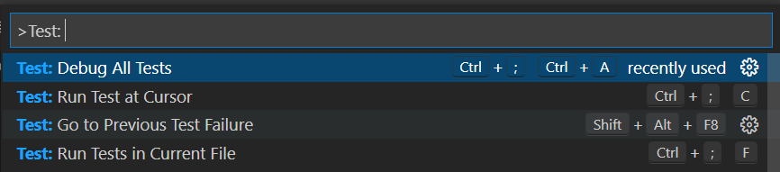
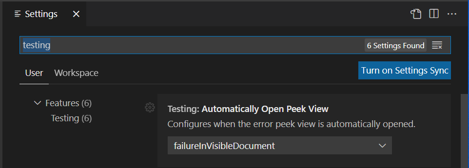

Testing Java with Visual Studio Code
Testing Java in Visual Studio Code is enabled by the Java Test Runner extension. It's a lightweight extension to run and debug Java test cases.
Overview
The extension supports the following test frameworks:
Note: JUnit 3 styled tests are not supported in this extension (for example,
extends junit.framework.TestCase).
The Java Test Runner works with the Language Support for Java by Red Hat and Debugger for Java extensions to provide the following features:
- Run/Debug test cases
- Customize test configurations
- View test report
- View tests in Test Explorer
If you run into any issues when using the features below, you can contact us by clicking the Report an issue button below.
Requirements
- JDK (version 11 or later)
- VS Code (version 1.59.0 or later)
- Language Support for Java by Red Hat
- Debugger for Java
Features
Run/Debug Test Cases
The extension will generate shortcuts (the green play button) on the left side of the class and method definition. To run the target test cases, select the green play button. You can also right-click on the play button to see more options.

Test Explorer
The Test Explorer shows all the test cases in your workspace. You can also run/debug your test cases from there.

Customize test configurations
Sometimes you may want to customize the configuration to run your test cases. To achieve this, you can add the configuration into your workspace settings under the section: java.test.config.

More details can be found on the vscode-java-test Wiki.
View test results
After running/debugging the test cases, the state of the related test items will be updated in both editor decorations and the Test Explorer.

You can trigger the command Test: Peek Output to peek the results view. You can select the links in the stack trace to navigate to the source location.
VS Code testing commands
There are other testing commands (for example, Run Tests in Current File) that can be found by searching for 'Test:' in the Command Palette (kb(workbench.action.showCommands)).

Settings
| Setting Name | Description | Default Value |
|---|---|---|
java.test.config |
Specify the configuration for the test cases to run with. More details. | {} |
java.test.defaultConfig |
Specify the name of the default test configuration. | "" |
VS Code testing settings
There are VS Code settings specific to testing that can be found by searching for 'testing' in the Settings editor (kb(workbench.action.openSettings)).

Project Setup
JUnit 5
Please refer to Getting Started from the JUnit 5's official website for getting started documentation.
Note: If your project does not use build tools (Maven/Gradle/...), make sure junit-platform-console-standalone.jar is on your project classpath.
JUnit 4
Refer to Download and Install from the JUnit 4's official website for the getting started documentation.
TestNG
Refer to the TestNG documentation from the TestNG official website for getting started information.
FAQ
If you meet any problem when using the extension, you can review the FAQ and our issue list to check if there is an answer to your problem.
Contributing and Feedback
If you are interested in providing feedback or contributing directly to the code base, please read Contributing to Java Test Runner, which covers the following:
Next steps
Read on to find out about:
- Debugging - Find out how to debug your Java project with VS Code.
- Java Extensions - Learn about more useful Java extensions for VS Code.